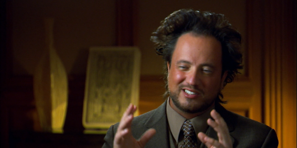

Ancient Aliens is a series of image macros based on History Channel’s TV series with the same name starring alien expert Giorgio A. Tsoukalos, who often tends to explain inexplicable phenomena as the direct result of aliens or extraterrestrials being on Earth. In a somewhat similar fashion to Bill O’Reilly’s You Can’t Explain That series, the Ancient Aliens macros exaggerate Tsoukalos’ beliefs to such an extent that they become humourous.
